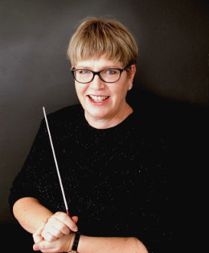

Ms. Jenny Going
Jenny Going is Musical Director of the Essendon Symphony where she has been conductor since 2008. In 2015 she completed a Masters of Music degree at The University of Melbourne under Benjamin Northey, specialising in orchestral conducting and has studied with Luke Dollman, Mark Heron, Michal Dworzynski, Mark Shiell and Kevin Noe. She was honoured to be the inaugural recipient of the Rosemary and John Hopkins Award for Conductors.
Jenny conducts with a number of youth organisations including Melbourne Youth Music Summer School and Bendigo Instrumental Music Week. In 2016 she founded and is Musical Director for The West Melbourne Schools Orchestra.
Jenny moved to Melbourne in 2006 when she founded Noteable – Music Education Resources. As Managing Director, she has written and published nine resources for classroom music teachers. Jenny is a regular presenter of workshops at national music education conferences throughout Australia and presents professional development workshops for music teachers for aMuse Victoria. Jenny has as a Head of Music for many years, most recently as Music Curriculum Coordinator at Princes Hill Secondary College in Carlton, Melbourne.
Jenny is a trombonist by nature and is currently learning to play the Viola!
For further details, see www.jennygoing.com.au.
Ms. Jayne Turner
As a singer and pianist Jayne Turner graduated from Melbourne University with a Bachelor of Music Education and has been working with schools and communities ever since. As a long-standing member of the Melbourne Chorale, Victoria Chorale and Victorian Opera, she has sung semi professionally and trained singers for many years.
For 25 years she was the Artistic Director and Principal Conductor of the Choral Institute Melbourne, taking this community organization to the lead in local and international engagements, tours and eisteddfods. Jayne has toured regularly with CHIME, as well as taken musical responsibility for many corporate events in Melbourne, such as Crown Christmas Entertainment, the Grand Prix Ball, and in 2008 was the chorus master for Andrea Bocelli’s Australian tour.
Jayne is currently Director of Music at Toorak College. Prior to this she was Director of Music at The Knox School and Head of Choral Studies PLC. She is an experienced teacher of VCE and IB Music, as well as directing many choirs, orchestras and musical productions, winning awards from the Victorian Theatre Guild for her productions.
Jayne has worked closely with the VCAA for many years, in providing VCE support material for teachers and students. She also presented a series of lectures to VCE students in the MYM summer School Prelude Program. She is often sought for adjudication of school House Music Competitions, regional and metropolitan Eisteddfods and school music festivals. She is a regular presenter and facilitator for Music Education Conferences with AMUSE, VCAA and VMTA.
The orchestra was founded in the 1990's by Paul Green (who still plays with us) as a string ensemble. Over the years the orchestra has grown to be a full symphony orchestra.
During this time, the orchestra performed under several names including Napier Chamber Orchestra, Napier Concert Orchestra and Napier Community Orchestra. However, in 2012 it established itself as the Essendon Symphony.
Previous conductors have included:
The Essendon Symphony is the only community-based orchestra in Melbourne's western suburbs. We are often looking for new players especially for violin, viola, double bass and brass.
Also, see the Essendon Symphony's Facebook page
We gratefully acknowledge - in no particular order - the generous support from: